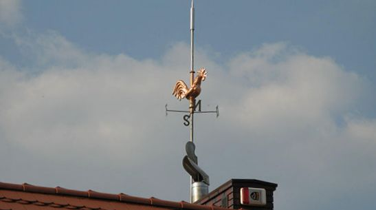
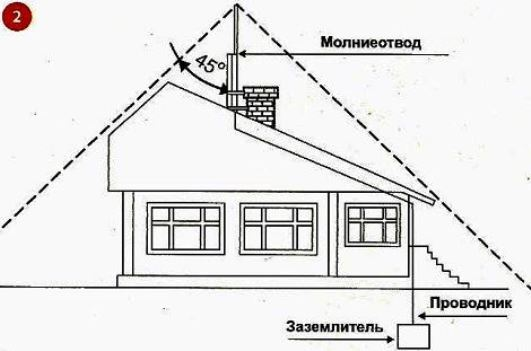
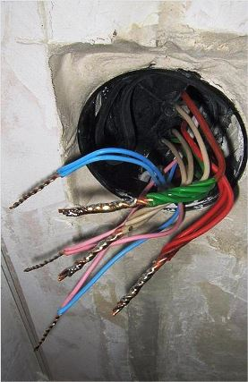

Качественный электромонтаж в Санкт-Петербурге и ленобласти, стаж 12 лет. Частный электрик, недорого и качественно.
Тел. 8 903 594 95 24 Николай.

Защита дома от молнии.
Частный электрик, звоните.
Вопрос молниезащиты загородных домов и дач всегда вызывал достаточно много споров. В основном они касались целесообразности этого технического мероприятия, и основные аргументы сторон определялись русскими поговорками, типа: «Бог не выдаст, свинья не съест» или: «Пока гром не грянет – мужик не перекрестится». Что же говорит всезнающая статистика по данному вопросу? Ежегодно погибают от ударов молний тысячи человек в год. Количество ударов молний в жилом доме вообще невозможно фиксировать точно. Однако опасность, несомненно, существует, и дискутировать о целесообразности молниезащиты дома, а также других зданий и сооружений видимо не приходится.
Сколько стоит, защитит дом от молний.
Цена работы от 5000 руб.

Помимо непосредственного воздействия молний на самого человека, о чем пишется очень много, не все знают о печальных последствиях таких ударов по жилью, особенно индивидуальному. Рассмотрим варианты, когда все обошлось без человеческих жертв и ущерба здоровью.
Защитит себя от пожара и молний.
Самый плохой вариант – возникновение пожара после молний. Как показывает практика, в коттеджных поселках минимум один раз за три-пять лет на участках сгорает один дом или одно строение. Чаще всего это результат попадания молнии. Но не всегда молния вызывает пожар. При ударе могут выходить (и выходят), из строя практически все оборудование и бытовая техника. Сгорают панели управления отопительных котлов, пробиваются газовые трубы, подводящие магистральный газ к дому, выходят из строя все телевизоры, насосы и двигатели, в общем, все то, что подвержено прохождению электрического потенциала молнии до земли.

Пассивная молниезащита на объектах жилищного дома.
Защита от молний с помощью токовода.
Самый простой и распространенный, общедоступный способ уберечь свой дом от молний – установка штыря на крыше дома или рядом с домом. С помощью такого токовода соединяется с очагом заземления в грунте, специально для этого устанавливаемом. Способ достаточно эффективен, но имеет один существенный недостаток – площадь такой защиты равна площади окружности, вычерченной 90 градусным угольником, положенным на верхний конец штыря молниезащиты. Вычертив простой рисунок на бумаге, будет понятно, что для эффективной защиты всего дома необходимо поднять данную защиту высоко над крышей. И это – без оттяжек. Понятно, что для индивидуальных домов такое решение часто неприемлемо, и по техническому и по дизайнерскому выполнению.
Защита дома металлическими штырями.
Другой достаточно распространенный способ заключается в установке на всей поверхности крыши, особенно на ее выдвинутых частях небольших штырей, объединенных одним или несколькими тоководами, которые также спускаются и объединяются в контуре защитного заземления. Недостаток очевиден – загромождение самой кровли и стен дома металлическими элементами, не украшающими сам дом и препятствующими сходу снега.
Сетка на крыше дома.
Третий способ – прокладка по всей крыше металлической сетки, которая заземляется. Такая сетка применяется, в основном на плоских конструкциях кровли. Основной недостаток – утяжеление самой крыши и необходимость проведения монтажных работ во время капитального строительства.
Способ активной молниезащиты жилого индивидуального дома.
Зашита молниеприемником.
В последнее десятилетие данную систему защиты признали во всем мире, и российские проектировщики проектируют ее для защиты зданий и других сооружений в промышленном строительстве в качестве защитной системы от молний. Система проходит государственный контроль и системы приемки.
Данная система с успехом применяется и в индивидуальном жилищном строительстве. В техническом плане она достаточно проста – тот же штырь, на конце которого расположен специальный молниеприемник. Он спроектирован таким образом, чтобы во время грозы создает определенное горизонтальное поле ионизации примерно равное в радиусе 50 метрам. При попадании разряда в эту площадь вся энергия молнии проходит через молниеприемник и стандартными способами отводится в землю. Сам молниеприемник монтируется на обычном штыре, он должен быть выше всех вертикальных выступающих конструкций крыши, допустим труб, но высоко (как обычный штырь молниезащиты) его поднимать нет необходимости.
Конечно, такую систему защиты от ударов молнии можно и самостоятельно смонтировать на дом, но все же эти работы лучше доверить специалистам в данной области.

Сколько будут стоить материалы.
Расценки на электропроводку.
Электромонтаж в доме.
Замена электропроводки в двухкомнатной квартире?.
Сколько стоит сделать внутреннюю проводку?.
Установка люстр и светильников.
Электромонтаж проводов в бане.
